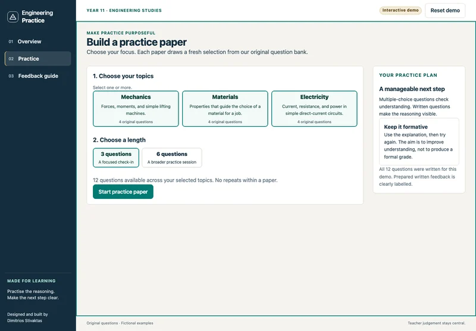

Enlarge screenshot.Source: Engineering practice papers
Build a fresh practice paper
Choose Mechanics, Materials or Electricity and a three- or six-question paper. The demo draws a random selection from twelve original questions, without repeats within a paper.
Teacher control. The teacher or learner chooses the focus. This is a small practice bank, not an official NESA paper or an exhaustive assessment.
Choose topics and paper length, then start a practice paper.